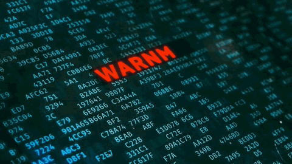

Ataques Cibernéticos
(Yuichiro Chino/Getty Images)
Ataques cibernéticos são as tentativas de hackers em danificar e destruir uma rede de sistemas.
Isso pode fazer com que dados importantes (e sigilosos) sejam roubados e expostos. Por exemplo, roubo de identidade, extorsão e entre outros dados que podem prejudicar a vida de uma pessoa.Esses ataques também recebem o nome de cibercrime, crime informático e crime eletrônico, sendo que todos são muito perigosos para os usuários.
Existem muitas maneiras de uma rede ser invadida, mas, geralmente, os ataques são bem sutis e silenciosos, o que torna ainda mais difícil a sua identificação.Como Funciona os Ataques Cibernéticos?
(Blog Portal Pós)
Sequestro de Dados acontece quando alguém acessa um site, e-mail ou pen drive infectado com um vírus malicioso.
Este momento permite que o criminoso tenha acesso à rede ou ao servidor da empresa. O hacker então procura os arquivos que busca roubar e os coloca em uma pasta ou servidor com senha, impedindo seu acesso. Após esta etapa, os hackers entram em contato com os donos dos dados para pedir um resgate, que muitas vezes é feito via bitcoin, o que dificulta o rastreamento.Prevenções para Ataques Cibernéticos

(Folha UOL)
1. Desenvolva um Programa de Segurança da Informação Tendo como centro a área de TI, o programa deve contar com políticas internas e externas para uso de dados, sigilo de documentos, utilização de dispositivos com diferentes níveis de permissionamento, diretrizes para o comportamento de colaboradores ao utilizar sistemas e dispositivos da organização, entre outras normas que englobem toda a cadeia produtiva.
2. Invista em plataformas tecnológicas que protejam os dados e simulem ataques cibernéticos Essas plataformas ajudam a mapear as falhas e proteger portas de entrada dos invasores de maneira mais rápida e efetiva, melhorando em escala a prevenção aos ataques, possibilitando planos de ação para mitigar possíveis ataques e sequestros de dados. Além disso, verifique com atenção as rotinas de backup automático, medidas de prevenção à perda de dados, firewall, proteção de privacidade e outras funcionalidades.
3. Previna-se contra o vazamento de dados Processos bem estruturados relacionados à gestão de riscos e incidentes, aliados ao desenvolvimento seguro e monitoramento contínuo dos dados, são fatores-chave de sucesso na segurança cibernética. Atente-se para vulnerabilidades em códigos de sistemas, APIs sem a devida proteção e servidores Cloud mal implementados.
4. Prepare-se para ataques que sequestram dados (Ransomware) Esse tipo de ataque é realizado de maneira automatizada, de forma a acessar os sistemas da organização por meio de falhas de segurança e então encriptar os dados encontrados. O correto gerenciamento e governança de dados e conteúdos sensíveis da organização (Data Governance), como logins e senhas de acesso a sistemas, aliado a sistemas operacionais atualizados e equipe treinada para evitar abertura de e-mails suspeitos (Pishing), são fatores de sucesso no processo contínuo da organização em evitar ataques Ransomware. Não se esqueça da redundância de sistemas, que promove a disponibilidade de dados e informações para situações de ataque hacker, garantindo a continuidade das operações.
5. Forneça treinamentos periódicos para os colaboradores A coordenação entre melhores ferramentas e softwares, processos consistentes e colaboradores bem treinados para agir em momentos de estresse é fundamental para o sucesso da organização frente aos desafios cibernéticos. Nos treinamentos, além de capacitar sobre como agir durante e após um ataque cibernético, é essencial abordar métodos e táticas de prevenção.